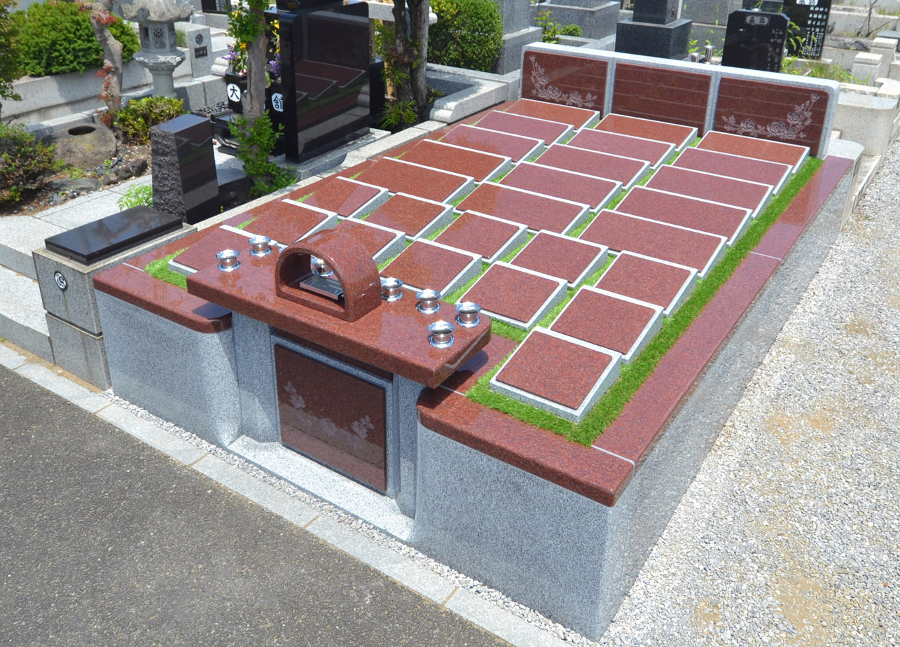
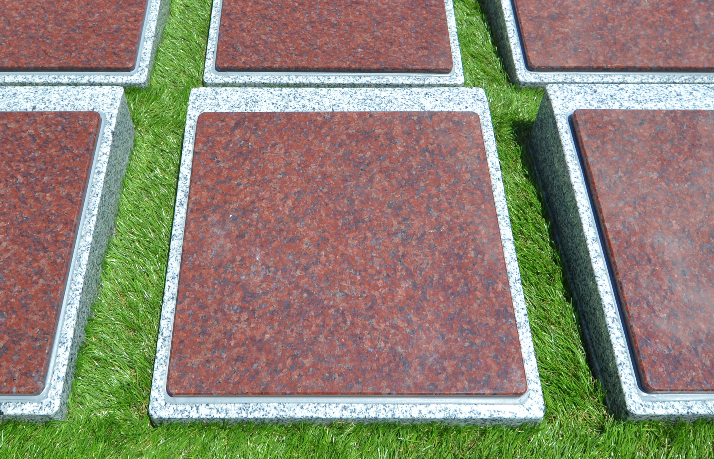
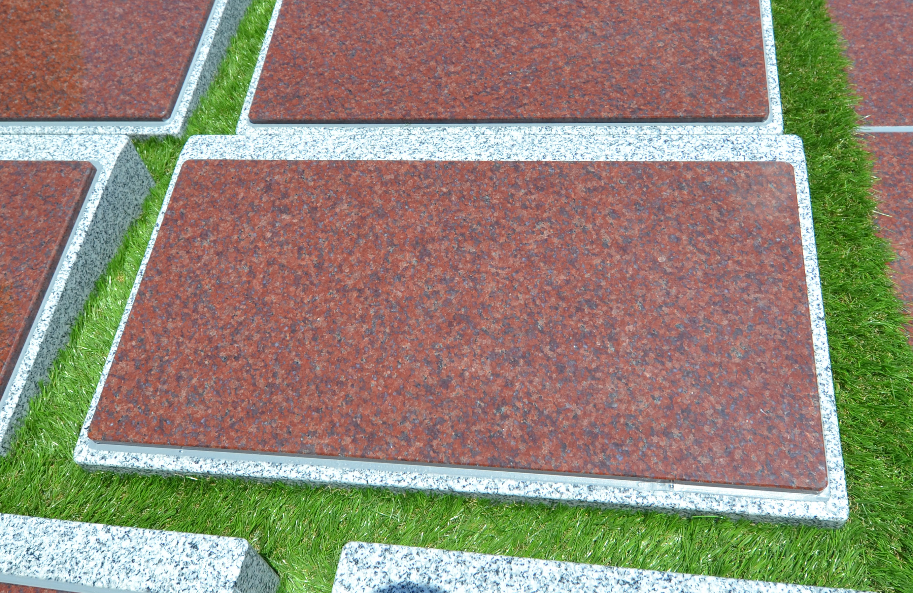
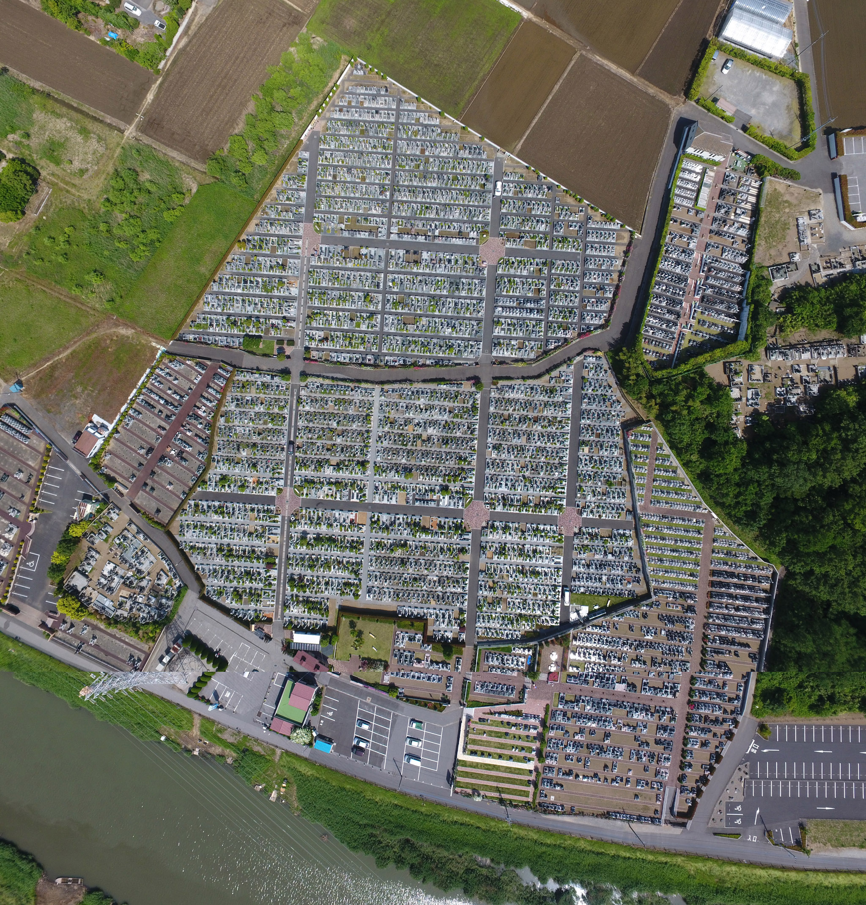
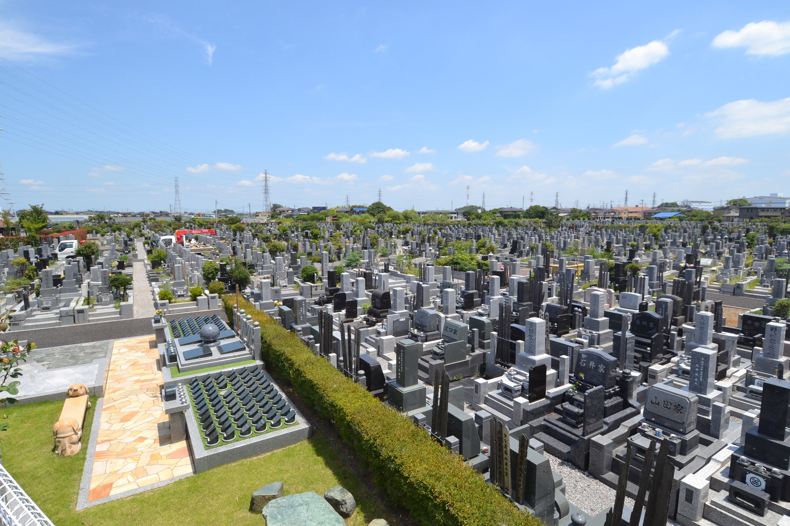
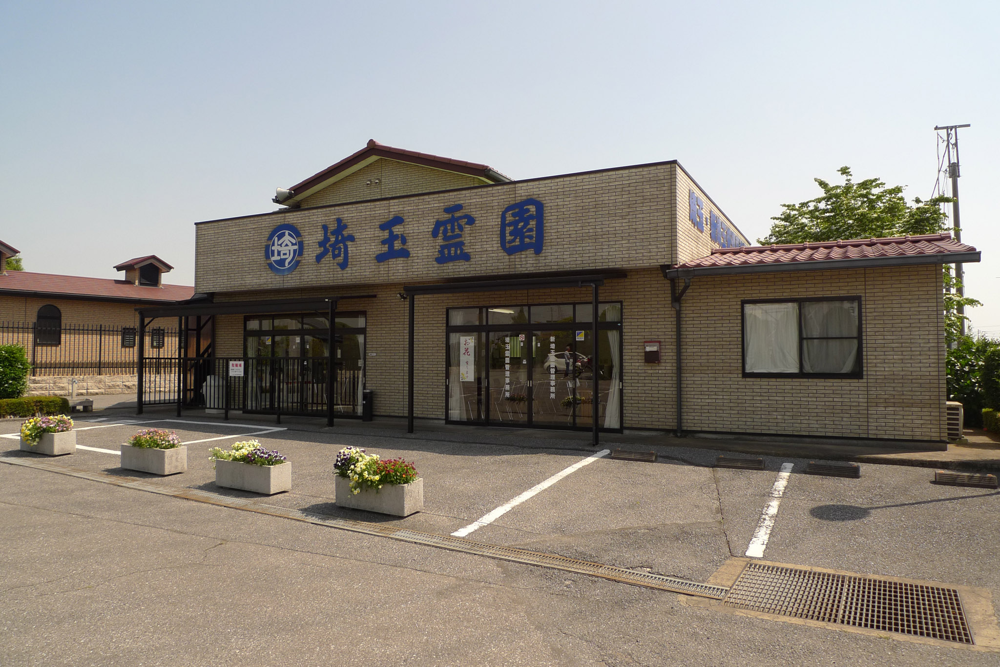

SAITAMA REIEN NEW PLATE STYLE
国籍・宗教を問わず、ご家族・ご夫婦はもちろん、友人や大切なパートナー同士でも。
粉骨せず、美しい「骨壺のまま」安らかに眠る、新しい供養のかたち。
当霊園に新たに整備されたプレート型永代供養墓は、美しい緑の芝生に映える上品な赤御影石を贅沢に採用しております。
冷たい従来型のお墓のイメージを払拭する、日当たりが良く現代的で開放的なつくりが特徴です。墓標となる個別の銘板プレートには、お名前や思い出の言葉を美しく彫刻し、大切なご家族やご友人の歩みを未来へと残します。
大切なご遺骨をパウダー状にすることなく、お骨壺のまま個別に末永くご安置いたします。

過去の宗旨や、国籍は一切関係ございません。どのような宗派の方であっても、当霊園が心を込めて末永くお守りいたします。
お墓の購入後は年間管理料や追加寄付金をいただくことはありません。後世の子供たちにお金の負担を残さない安心のシステムです。
跡継ぎがいない方、一人暮らしの方でもお申込みいただけます。将来、無縁仏になったり、高額な「墓じまい」が発生する心配が一切ありません。
ご夫婦や血縁のみならず、籍を入れないパートナー同士、大切なご友人同士、事実婚のご夫婦など、制約なしに「大切な人と一緒に眠る」ことができます。
一般の合祀墓では遺骨を砕く「粉骨」を行うケースが多い中、当プレート墓は大切なお体を骨壺に入れたまま安置いたします。お体を細かくされたくないご親族も安心です。
お手元にご遺骨がない場合でも、ご自身の終活の一環として生前予約としてお申し込みいただけます。自分たちの安心を今から決めておくことができます。
埼玉霊園を管轄・運営する由緒ある宗教法人「馬頭院」が責任を持って霊園全体の清掃・維持管理を行い、真心を込めたお守りと法要をお約束します。
経営主体：宗教法人 馬頭院
歴史に裏打ちされた盤石な運営体制により、お墓の未来が永遠に保証されます。
家族構成や将来の計画に合わせて、柔軟にお選びいただけます。

清らかな芝生のなかに並ぶコンパクトで美しい彫刻プレート。寄り添って眠りたいお二人に最適です。
総額費用（税込）
※埋葬手数料・プレート彫刻料は別途頂戴いたします。

大家族でも墓標をまとめて、一つのワイドプレートに。みんなが末永く繋がっていられる空間です。
総額費用（税込）
※埋葬手数料・プレート彫刻料は別途頂戴いたします。
埼玉霊園の圧倒的なスケールと、整然とした安らぎのランドスケープをご覧ください。

どこからでも陽射しが届く抜群の日当たりと、徹底した清掃管理を維持しています。

お墓参りにいらっしゃるご家族にとっても、いつでも居心地の良い、憩いの場所です。

埼玉霊園には、安心してお参りいただけるように立派な管理棟・事務所を完備。専門の常駐スタッフが、園内の美化やお墓の管理を年中無休で行っております。
管理運営は「宗教法人 馬頭院」が執り行っており、未来永劫にわたり安心してお墓を守り続ける体制を構築しています。
祥月命日、お彼岸、お盆など定期的な合同法要を手厚く実施。
生前予約から納骨手続き、複雑な改葬手続きまで、一貫してご相談可能。
「遠方の実家のお墓参りが困難」「管理が負担になっている」など、お気軽にご相談ください。
ご実家の先祖代々のお墓を「墓じまい」し、アクセス便利な埼玉霊園へお骨を移動する（改葬）手続きをスムーズに行えるよう、役所への申請書類のアドバイスや手順を、現地スタッフが懇切丁寧にサポートいたします。
はい、お申込みいただけます。過去の宗旨・宗派、あるいはお住まいの国籍は一切関係ございません。どのような背景の方でも、皆さま同じように永代供養させていただきますのでご安心ください。
はい、一切かかりません。お申込み時にお支払いいただく総額費用（および納骨の際の実費彫刻・埋葬手続き手数料等）のみで、以後の管理費用は永久無料となります。
はい、大丈夫です。当プレート型供養墓は家族制限が一切ありません。親しい友人同士、生涯を共にするパートナー様、様々な理由で入籍されない事実婚のカップル様なども、同じ区画の銘板を分け合い、一緒に眠っていただけます。
粉骨をして小さく、またはパウダー状にすることに対して寂しさや心理的抵抗を感じるご遺族様が多くいらっしゃいます。当霊園では、生前そのままに近い「お骨壺のまま」での安置にこだわり、本来の尊厳を守る供養を行っています。
案内会期間中（8/1～9/4の9:00～17:00）は、現地管理棟のスタッフが常に案内をお受けいたしますので、予約なしでのご来園も可能です。ただし、スムーズにご説明させていただくため、事前にお電話（0480-34-7334）をいただけましたら、お待たせすることなく優先的にご見学可能です。
※敷地内には大型の無料駐車場を完備しております。お車でのご来園も非常に便利です。
Googleマップでルート案内を開くプランの空き状況確認、現地案内、墓じまいのご不安など、何でも丁寧にお答えします。
※「プレート型永代供養墓の案内ページを見た」とお伝えいただけるとスムーズにご案内できます。